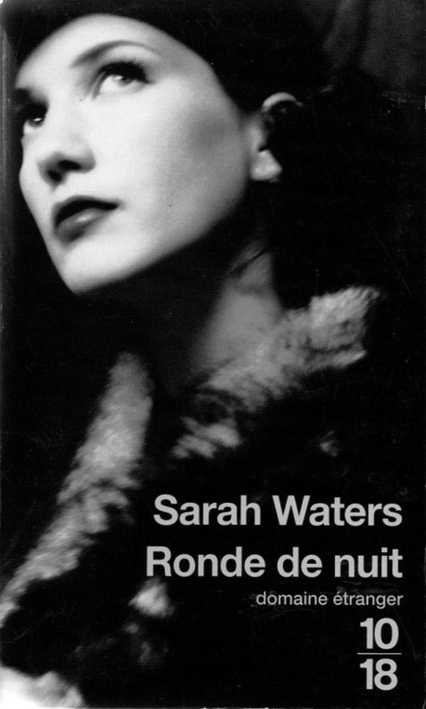

Sur l'auteur
Née en 1966 au pays de Galles, Sarah Waters a été libraire, puis enseignante. Dès son premier roman, Caresser le velours, qui a récemment été adapté à la télévision par la BBC, elle devient l'égérie des milieux gays. Avec son second roman, Affinités (Denoël, 2005), elle obtient le prix du jeune écrivain de l'année 2000 délivré par le Sunday Times. La publication de son troisième roman, Du bout des doigts, marque sa consécration. Élue « auteur de l'année » par le Sunday Times, elle reçoit en 2003 le prix des Libraires et le British Book Awards, et figure sur la liste des « vingt meilleurs jeunes romanciers anglais » établie par la revue Granta. Sarah Waters vit aujourd'hui à Londres.
SARAH WATERS
RONDE DE NUIT
Traduit de l'anglais
par Alain DEFOSSÉ
Couverture : Edward Holub | Corbis
À Lucy Vaughan
Titre original : The Night Watch
1947
1
Donc voilà, se dit Kay, voilà le genre de personne que je suis devenue : quelqu'un dont les pendules et les montres se sont arrêtées, et qui peut dire l'heure en regardant en bas quel nouvel estropié sonne à la porte de son logeur.
Elle se tenait devant la fenêtre ouverte, vêtue d'une chemise sans col et d'une culotte grisâtre, fumant une cigarette et observant les allées et venues des patients de Mr Leonard. Ils étaient ponctuels — si ponctuels qu'elle pouvait effectivement dire l'heure en les voyant arriver : la femme au dos cassé, le lundi à dix heures ; le soldat blessé, le mardi à onze. Tous les jeudis, c'était un homme âgé, assisté par un jeune homme à l'air un peu égaré : Kay aimait bien surveiller leur arrivée. Elle aimait bien les voir remonter lentement la rue : l'homme impeccable dans son costume sombre de croque-mort, le garçon sérieux, patient, séduisant aussi — comme une allégorie de la jeunesse et du grand âge, se disait-elle, sur une toile de Stanley Spencer, ou un de ces peintres modernes excessivement réalistes. Après eux, c'était le tour d'une femme accompagnée de son fils, un gamin affligé de lunettes et d'un pied bot ; après, d'une vieille Indienne souffrant de rhumatismes. Le petit garçon traînait parfois, s'amusant à gratter la mousse et la poussière accumulées entre les dalles brisées de l'allée avec sa chaussure d'infirme, tandis que sa mère discutait avec Mr Leonard, dans l'entrée. Une fois, récemment, elle avait levé les yeux et vu Kay qui les observait ; et elle avait entendu le petit faire une comédie dans l'escalier car il ne voulait pas aller aux toilettes tout seul.
« C'est à cause des anges sur la porte ? avait-elle entendu la mère demander. Mais enfin, ce ne sont que des images ! Un grand garçon comme toi ! »
Kay devinait que ce n'étaient pas les blafards anges edwardiens de Mr Leonard qui l'effrayaient, mais la possibilité de la rencontrer, elle. Il devait imaginer qu'elle hantait le dernier étage, sous les toits, comme un fantôme ou une folle.
Il avait raison, d'une certaine manière. Car il lui arrivait d'aller et venir sans cesse, comme les fous, dit-on. Ou bien elle demeurait assise pendant des heures d'affilée — plus immobile qu'une statue, car elle observait les ombres rampant sur le tapis. Alors il lui semblait réellement être un fantôme, peut-être, devenir partie intégrante de la matière usée de la maison, se dissoudre dans l'ombre qui s'accumulait comme la poussière dans ses angles bizarres.
Un train passa, entrant dans la gare de Clapham Junction, à deux rues de là ; elle sentit la vibration dans le rebord de fenêtre sous ses bras. L'ampoule d'une lampe derrière son épaule ressuscita soudain, clignota une seconde comme un œil irrité, puis s'éteignit. Le mâchefer dans la cheminée — une vilaine petite cheminée, la pièce était autrefois une chambre de bonne — tomba lentement. Kay prit une dernière bouffée de sa cigarette, puis la pinça entre le pouce et l'index pour l'éteindre.
Cela faisait plus d'une heure qu'elle était à la fenêtre. Nous étions mardi : elle avait vu arriver un homme au nez retroussé, avec un bras abîmé, vaguement attendu les deux modèles de Stanley Spencer. Et puis elle avait décidé de laisser tomber. De sortir un peu. Il faisait beau, après tout : c'était la mi-septembre, le troisième mois de septembre d'après-guerre. Elle passa dans la pièce voisine, qu'elle utilisait comme chambre, et commença de se changer.
La pièce était plongée dans la pénombre. Certaines vitres avaient été soufflées, et Mr Leonard les avait remplacées par du lino. Le lit était haut, et recouvert d'un dessus-de-lit en chenille de coton relativement pelée : le genre de lit qui vous forçait à penser, de manière déplaisante, à tous les êtres qui au cours des années y avaient dormi, fait l'amour, tourné et viré en proie à la fièvre, y étaient nés, y étaient morts. Il en émanait une odeur légèrement aigre, comme celle d'un pied de bas porté dans la journée. Mais Kay y était habituée, et ne la remarquait plus. Pour elle, cette pièce n'était qu'un endroit où dormir, ou bien rester allongée sans dormir. Les murs en étaient vides, neutres, comme quand elle y avait emménagé. Elle n'y avait jamais accroché un tableau, installé des livres ; elle ne possédait ni tableaux ni livres ; elle ne possédait pas grand-chose. Elle avait juste fixé une longueur de fil de fer dans un angle, auquel elle suspendait ses vêtements sur des cintres de bois.
Ses vêtements, au moins, étaient impeccables. Elle les passa en revue, choisit une paire de chaussettes soigneusement reprisées et un pantalon de bonne coupe. Elle ôta sa chemise pour en passer une plus propre, avec un col blanc souple qu'elle pouvait porter ouvert, comme une femme.
Mais ses chaussures étaient des chaussures d'homme ; elle passa une minute d'horloge à les lustrer. Puis elle glissa des boutons de manchette à ses poignets et brossa ses courts cheveux bruns, ajoutant une touche de brillantine. Les gens qui la croisaient dans la rue, sans trop faire attention, la prenaient souvent pour un charmant jeune homme. Régulièrement, on l'appelait « mon garçon », voire même « fiston », les vieilles dames surtout. Mais en observant un peu son visage, on y voyait aussitôt les marques de l'âge, les fils blancs dans la chevelure ; en fait, elle aurait trente-sept ans à son prochain anniversaire.
En descendant, elle se faisait aussi discrète que possible, pour ne pas déranger Mr Leonard ; mais il était difficile de ne pas faire de bruit, avec les craquements et grincements de l'escalier. Elle passa aux toilettes, puis fit halte deux minutes à la salle de bains pour se laver le visage et se brosser les dents. Une lueur verte baignait son visage, à cause du lierre qui envahissait la fenêtre. L'eau donnait des à-coups et crachotait dans les tuyaux. Il y avait une clef plate accrochée à côté du robinet, car elle restait parfois complètement bloquée — et il fallait cogner ici et là sur la tuyauterie pour qu'elle jaillisse de nouveau.
La pièce jouxtant la salle de bains était le cabinet de Mr Leonard et, par-dessus le frottement de la brosse dans sa propre bouche et les éclaboussures de l'eau dans le lavabo, Kay percevait son monologue dense et continu, tandis qu'il travaillait sur l'homme au nez retroussé et au bras abîmé. Comme elle sortait de la salle de bains et passait en silence devant la porte, les paroles lui parvinrent plus clairement.
« Eric, entendit-elle, il faut mmm-mmmm. Sinon comment pourrez-vous zzzzz-zzzz lorsque mmmm-zzzz-cupéré pour de bon ? »
Elle descendit furtivement, ouvrit la porte juste fermée au loquet et demeura un long moment sur le seuil — hésitant presque, à présent. La blancheur du ciel la fit cligner des paupières. La journée paraissait toute molle, soudain : absolument pas superbe, mais vidée de toute énergie, épuisée. Il lui semblait sentir déjà la poussière se déposer sur ses lèvres, ses cils, aux coins de ses yeux... Mais pas question de renoncer. Il lui fallait bien faire honneur à ses cheveux fraîchement brossés ; à ses chaussures bien cirées, à ses boutons de manchette. Elle descendit le perron et se mit à marcher. Elle avait la démarche d'une personne qui sait exactement où elle va, et pourquoi — alors qu'en réalité, elle n'avait rien à faire, aucune visite à rendre, personne à voir. Sa journée était vacante, comme toutes ses journées. Elle aurait aussi bien pu inventer à chaque pas, laborieusement, le sol sur lequel elle avançait.
Elle prit vers l'est, par les rues dévastées et soigneusement nettoyées, en direction de Wandsworth.
« Pas trace du colonel Barker, aujourd'hui, oncle Horace », fit Duncan, levant la tête vers les fenêtres du dernier étage, comme Mr Mundy et lui approchaient de la maison.
Il était un peu déçu. Il aimait bien voir la pensionnaire de Mr Leonard. Il aimait sa coupe de cheveux audacieuse, ses tenues masculines, son profil aigu, distingué. Il pensait qu'elle avait pu être pilote de chasse, sous-officier chez les WAAF, quelque chose de ce genre : une de ces femmes, en d'autres termes, qui s'étaient battues si vaillamment pendant la guerre et se retrouvaient maintenant sur la touche. « Colonel Barker », c'est ainsi que l'appelait Mr Mundy. Lui aussi aimait bien la voir là, à la fenêtre. Il leva les yeux, hocha la tête puis la baissa et se remit à marcher, trop essoufflé pour pouvoir parler.
Duncan et lui avaient effectué tout le trajet depuis White City jusqu'à Lavender Hill. Ils avaient pris leur temps, changeant plusieurs fois de bus, s'arrêtant pour se reposer ; il leur fallait presque la journée pour venir jusqu'ici et rentrer après. Duncan prenait toujours son mardi, et rattrapait ses heures le samedi. Ils étaient chouettes pour ça, à l'usine où il travaillait. « Son oncle, c'est tout, pour ce garçon ! » avait-il entendu dire, plus d'une fois. Ils ne savaient pas que Mr Mundy n'était pas vraiment son oncle. Ils ne savaient pas quels soins Mr Leonard lui prodiguait ; sans doute pensait-on qu'il se rendait à l'hôpital. Duncan les laissait croire ce qu'ils voulaient.
Il guida Mr Mundy à l'ombre de la maison un peu penchée. Elle semblait toujours singulièrement effrayante, se dit-il, ainsi dressée au-dessus de vous. Car c'était la dernière encore debout de ce qui, avant la guerre, était toute une rue de maisons mitoyennes ; elle en portait toujours comme des cicatrices, à chaque flanc, là où elle touchait ses sœurs siamoises, le zigzag des escaliers fantômes et la marque creuse des cheminées disparues. Duncan n'arrivait pas à comprendre comment elle tenait encore ; en pénétrant dans l'entrée avec Mr Mundy, il n'avait jamais pu se défaire du sentiment qu'un jour il claquerait la porte un tantinet trop fort, et que tout s'effondrerait autour d'eux.
Il referma donc la porte doucement ; après quoi, la maison paraissait plus ordinaire. L'entrée était plongée dans une pénombre ouatée ; des chaises au dossier raide la cernaient, un portemanteau sans manteau, et deux ou trois plantes pâlichonnes ; au sol, un motif de dalles noires et blanches dont certaines, descellées, montraient le gris du ciment au-dessous. L'abat-jour était une ravissante coquille de porcelaine — probablement destinée à un bec de gaz, à l'origine, mais à présent équipée d'une ampoule dans une douille de bakélite et d'un fil marron un peu effrangé.
Duncan remarquait ces petites imperfections, ces détails ; c'était un des plaisirs de sa vie. Plus ils arrivaient tôt, plus il était content, car cela lui donnait le temps d'aider Mr Mundy à s'asseoir sur une chaise et de faire ensuite, tranquillement, le tour de la pièce en inspectant tout. Il admirait la rambarde d'escalier joliment sculptée, et les barreaux aux extrémités de cuivre terni. Il aimait bien tel bouton d'ivoire décoloré sur une porte de placard, et la peinture des lambris, un faux bois réalisé au peigne. Mais surtout, au fond du couloir menant au sous-sol, se trouvait une table de bambou, couverte de bibelots criards ; et parmi les chiens et chats de plâtre, les presse-papiers et vases en majolique, son objet préféré : une vieille coupe étincelante de reflets, très belle, ornée d'un motif de serpents et de fruits. Mr Leonard y mettait des noix poussiéreuses, avec un casse-noix de fer, et Duncan ne s'en approchait jamais sans ressentir jusqu'à la moelle de ses os le petit drame qui se produirait si quelque main imprudente saisissait le casse-noix et le laissait tomber contre la porcelaine.
Mais les noix étaient à leur place, comme toujours, couvertes d'une pellicule de poussière ouatée, intacte ; et Duncan eut aussi le temps d'examiner deux tableaux accrochés de biais au mur — car tout était de biais, dans cette maison. Ils se révélèrent plutôt banals dans leur cadre en Oxford très ordinaire. Mais cela aussi lui procura un certain plaisir — quoique différent —, celui , qu'il prenait à regarder un objet peu esthétique et à se dire : Toi, tu n'es pas à moi, et je ne suis pas obligé de te vouloir !
Percevant du mouvement dans la pièce au-dessus, il retourna vivement aux côtés de Mr Mundy. Une porte s'était ouverte sur le palier, et il entendait des voix : c'était Mr Leonard prenant congé du jeune homme qui avait toujours rendez-vous avant eux. Duncan aimait bien croiser cet homme, presque autant qu'il aimait voir le colonel Barker et la coupe de porcelaine ; il était sympathique. Ce pouvait être un marin. « Ça va, les gars ? » fit-il, adressant un vague clin d'œil à Duncan. Il demanda quel temps il faisait à présent, et s'enquit de l'arthrite de Mr Mundy — tout en tirant une cigarette d'un paquet et la portant à ses lèvres, avant de sortir une boîte d'allumettes et d'en craquer une ; tout cela d'une seule main, en un geste aisé et naturel, tandis que son autre bras, atrophié, pendait à son flanc.
Pourquoi venait-il, se demandait toujours Duncan, alors qu'il s'en sortait si bien ainsi ? Peut-être cherchait-il l'âme sœur ; car évidemment, le bras pouvait être dissuasif pour une jeune fille.
Le jeune homme remit la boîte d'allumettes dans sa poche et s'en alla. Mr Leonard accompagna Duncan et Mr Mundy à l'étage — lentement, bien sûr, laissant Mr Mundy imposer son rythme.
« Quelle plaie, alors, dit Mr Mundy, gêné. Qu'est-ce qu'on peut bien faire de moi ? Me jeter aux ordures, oui.
— Allons, allons ! » fit Mr Leonard.
Duncan et lui aidèrent Mr Mundy à entrer dans la salle de consultation. Ils l'assirent sur une autre chaise au dossier de bois, lui ôtèrent sa veste, s'assurèrent qu'il était bien installé. Mr Leonard sortit un carnet noir et y jeta un bref coup d'œil ; puis il prit place en face de Mr Mundy, sur une chaise tout aussi raide. Duncan alla à la fenêtre et s'assit sur une sorte de coffre rembourré posé là, la veste de Mr Mundy sur les genoux. La fenêtre était ornée d'un rideau légèrement avachi sur son fil de fer, et d'où émanait une odeur âcre. Les murs étaient recouverts de papier gaufré à motifs en relief, et laqués de marron chocolat.
Mr Leonard se frotta les mains. « Bien, dit-il, comment allons-nous, depuis la dernière fois ? »
Mr Mundy pencha la tête. « Pas trop brillant, dit-il.
— Toujours ces sensations de douleur ?
— Je n'arrive pas à m'en débarrasser.
— Mais vous n'avez eu recours à aucun remède frelaté, d'aucune sorte ? »
Mr Mundy remua la tête, mal à l'aise. « Mon Dieu, avoua-t-il au bout d'une seconde, une petite aspirine, peut-être. »
Mr Leonard rentra le menton et regarda Mr Mundy comme pour dire : Ah là là... « Bon, vous savez très bien à quoi ressemble une personne qui utilise en même temps les remèdes illusoires et la thérapie spirituelle, n'est-ce pas ? Elle ressemble à un âne tiré par deux maîtres à la fois : ça n'avance pas. Vous le savez, n'est-ce pas ?
— Mais c'est tellement douloureux... dit Mr Mundy.
— La douleur ! » s'exclama Mr Leonard, avec un mélange d'amusement et de mépris total. Il s'agita sur sa chaise. « Cette chaise souffre-t-elle de devoir supporter mon poids ? Pourquoi pas, puisque le bois dont elle est faite est tout aussi matériel que l'os et le muscle de votre jambe, dont vous dites qu'ils vous font mal de devoir supporter votre poids ? Tout cela parce que personne n'imagine qu'une chaise puisse souffrir. Si vous ne croyez pas en la douleur de votre jambe, cette jambe deviendra aussi insensible, aussi négligeable à vos yeux que le bois de cette chaise. Vous le savez bien, n'est-ce pas ?
— Oui, dit Mr Mundy, l'air soumis.
— Oui, répéta Mr Leonard. Bien, commençons. »
Duncan demeurait immobile. Il fallait rester parfaitement immobile et silencieux durant toute la séance, mais surtout maintenant, tandis que Mr Leonard rassemblait ses esprits, son énergie, concentrait toutes ses forces afin de pouvoir s'attaquer à la fausse idée que Mr Mundy se faisait de son arthrite. Pour ce faire, il renversait légèrement la tête et observait avec une grande intensité, non pas Mr Mundy, mais une photo accrochée au-dessus de la cheminée, représentant une femme au regard doux vêtue d'une robe victorienne à col montant, et que Duncan savait être Mrs Mary Baker Eddy, fondatrice de la Christian Science. Sur le cadre noir qui entourait la photo, quelqu'un — peut-être Mr Leonard lui-même — avait inscrit une phrase à la peinture émaillée, d'une main malhabile : Soyez toujours le gardien à la porte de la Pensée.
Chaque fois, cette phrase lui donnait envie de rire : non qu'il la trouvât particulièrement comique, mais rire, en cet instant justement, aurait été une erreur fatale ; et chaque fois, à cet instant précis, il sentait la panique le gagner peu à peu, à l'idée de devoir rester si longtemps immobile et silencieux : il allait forcément émettre un bruit quelconque, esquisser un geste — sauter sur sa chaise, se mettre à pousser des cris aigus, avoir une quinte... Mais c'était déjà trop tard. Mr Leonard avait changé de position — il se tenait penché, fixant Mr Mundy. Et quand il reprit la parole, c'était dans un chuchotement, mais un chuchotement intense, tout empreint d'un sentiment d'urgence et de foi.
« Cher Horace, dit-il, il faut m'écouter. Tout ce que vous pensez de votre arthrite est erroné. Vous ne souffrez pas d'arthrite. Vous ne souffrez pas. Vous n'êtes pas soumis à ces pensées et croyances selon lesquelles la maladie et la douleur priment sur tout et régissent tout... Écoutez-moi, cher Horace. Vous n'avez pas peur. Aucun souvenir ne vous effraie. Aucun souvenir ne peut vous faire croire que le malheur s'attaquera de nouveau à vous. Vous n'avez rien à craindre, cher Horace. L'amour est avec vous. L'amour vous emplit et vous entoure... »
Les mots tombaient, encore et encore — comme une pluie de coups très doux donnés par un amant sévère. Il était impossible, se dit Duncan — oubliant soudain son désir de rire —, de ne pas vouloir se soumettre à la passion qui en émanait ; impossible de refuser d'en être impressionné, touché, convaincu. Il pensa au jeune homme au bras perdu ; imagina l'homme assis là, à la place de Mr Mundy, en train d'écouter ces mots, « L'amour vous emplit », « Vous n'avez rien à craindre », et de prier, prier pour que son bras grandisse, prenne forme. Une telle chose était-elle possible ? Duncan, pour Mr Mundy, pour le jeune homme, voulait croire que oui. Il le voulait plus que tout au monde.
Il regarda Mr Mundy. Peu après le début de la séance, il avait fermé les yeux ; tandis que le chuchotement se poursuivait, il se mit à pleurer, tout doucement. Les larmes coulaient en ruisselets sur ses joues, se réunissant sous son menton, mouillant son col de chemise. Il ne faisait aucune tentative pour les arrêter, gardait les mains posées, inertes, sur ses cuisses, ses doigts aux ongles soignés se crispant par instants ; de temps à autre, un grand soupir gonflait sa poitrine, puis lui échappait dans un lourd sanglot.
« Cher Horace, continuait Mr Leonard, aucun esprit n'a le moindre pouvoir sur vous. Je réfute l'existence de vos troubles. Les troubles n'existent pas. J'affirme la réalité de l'harmonie, son pouvoir sur vous, sur chacun de vos organes : sur vos bras, sur vos jambes ; sur vos yeux ; sur votre foie et sur vos reins ; sur votre cœur et sur votre cerveau, sur vos viscères. Tous ces organes sont en parfait état. Horace, écoutez-moi... »
Il continua quarante-cinq minutes ainsi ; puis il se redressa, aucunement fatigué. Mr Mundy tira enfin son mouchoir, se moucha et s'essuya le visage. Mais ses larmes étaient déjà sèches ; il se leva sans aide, et parut marcher un peu plus aisément, être un peu moins abattu. Duncan lui apporta sa veste. Mr Leonard se leva à son tour, s'étira, but une gorgée d'un verre d'eau. Lorsque Mr Mundy le paya, il prit l'argent avec un profond air d'excuse.
« Et ce soir, dit-il, je vous inscris dans ma bénédiction quotidienne. Serez-vous prêt ? À neuf heures et demie, disons ? » Car, Duncan le savait, il ne voyait jamais nombre de ses patients : des gens qui lui envoyaient de l'argent, et sur lesquels il travaillait à distance, ou par lettre, par téléphone. Il serra la main de Duncan. Sa paume était sèche; ses doigts doux et lisses comme ceux d'une jeune fille. Il sourit, mais son regard semblait tourné vers l'intérieur, comme celui d'une taupe. En cet instant, il aurait pu être aveugle.
Et combien ce serait étrange, pensa soudain Duncan, s'il l'était effectivement !
Cette idée lui donna de nouveau envie de rire. Et une fois qu'il eut rejoint l'allée devant la maison, avec Mr Mundy, il rit ; et Mr Mundy se joignit à son hilarité, se mit à rire lui aussi. C'était là une sorte de réaction nerveuse à la pièce, au silence, au doux tir de barrage de paroles apaisantes. Leurs regards se croisèrent et, en quittant l'ombre de la maison penchée pour se diriger vers Lavender Hill, ils riaient comme deux gamins.
« Je ne veux pas d'une femme sans cervelle, disait l'homme. J'ai eu ma dose avec ma dernière petite amie, je vous prie de me croire.
— À ce stade, nous conseillons toujours à nos clients de garder l'esprit aussi ouvert que possible, dit Helen.
— Mmm. Et le portefeuille aussi, j'imagine », dit l'homme.
Il portait un costume bleu, le costume civil offert aux démobilisés, déjà lustré aux coudes et aux poignets, et son teint olivâtre était celui d'un bronzage tropical sur le déclin. Il avait peigné ses cheveux avec une précision extraordinaire, la raie droite et blanche comme une cicatrice. Mais quelques pellicules restaient collées à la brillantine, qui attiraient sans cesse le regard d'Helen.
« Une fois, je suis sorti avec une WAAF, disait-il avec rancœur. À chaque fois qu'on passait devant une bijouterie, elle se tordait la cheville... »
Helen tira une autre fiche. « Et cette dame, là ? Voyons. Aime la couture et le cinéma... »
L'homme se pencha pour jeter un coup d'œil sur la photo, et se redressa aussitôt en secouant la tête. « Je n'aime pas les filles à lunettes.
— N'oubliez pas ce que je vous ai dit, il faut garder l'esprit ouvert.
— Je ne voudrais pas être désagréable, dit-il, lançant un bref regard à la tenue sombre et assez neutre d'Helen, mais une fille qui porte des lunettes... mon Dieu, c'est qu'elle se laisse déjà aller. On se demande forcément à quoi ça va mener... »
Cela dura ainsi encore une vingtaine de minutes ; ils finirent par garder cinq candidates sur les quinze dossiers qu'Helen avait sortis pour lui.
L'homme était déçu, mais dissimulait son désarroi derrière une certaine agressivité. « Alors on fait quoi, maintenant ? » demanda-t-il, tirant sur ses manches lustrées. « J'imagine que vous allez leur montrer ma vilaine bobine, et elles vont devoir dire si elle leur plaît ou pas. Je vois d'ici le résultat. J'aurais peut-être dû me faire photographier avec un billet de cinq livres coincé derrière l'oreille. »
Helen l'imagina chez lui le matin même, choisissant une cravate, passant un coup d'éponge sur les parties usées de sa veste, polissant encore et encore l'alignement de sa raie.
Elle le raccompagna dans l'escalier, jusqu'à la rue. En revenant dans la salle d'attente, elle regarda Viv, sa collègue, et souffla dans ses joues.
« Pénible, hein ? fit Viv. Je me demandais : vous ne pensez pas qu'il ferait l'affaire, pour la dame de Forest ?
— Il cherche plus jeune.
— C'est ce qu'ils cherchent tous, non ? » dit Viv, étouffant un bâillement. Un agenda était ouvert devant elle sur le bureau. Elle se tapota la bouche, parcourut la page. « Plus personne avant une demi-heure. On se prend un petit thé ?
— Oh, pourquoi pas », dit Helen.
Soudain, leurs mouvements étaient plus vifs que quand elles avaient affaire à des clients. Viv ouvrit le tiroir inférieur d'un classeur et en tira une mignonne petite bouilloire électrique et une théière. Helen emporta la bouilloire jusqu'aux toilettes du palier et la remplit au lavabo. Puis elle la posa sur le sol, la brancha sur une prise fixée dans la plinthe, et attendit. Il fallut environ trois minutes à l'eau pour bouillir. Le papier peint se décollait au-dessus de la prise, là où la vapeur l'attaquait toujours. Elle le lissa, comme elle le faisait chaque fois ; il resta un moment aplati, puis se réenroula doucement sur lui-même.
L'officine occupait deux pièces au-dessus d'un atelier de perruques, dans une rue derrière la station de métro de Bond Street. Helen recevait les clients un par un dans la pièce donnant sur la rue ; Viv travaillait à son bureau dans la salle d'attente, et les saluait à leur arrivée ; il y avait là un divan et des chaises dépareillées, où ils pouvaient s'installer quand ils étaient en avance. Un cactus de Noël en pot fleurissait de temps à autre, de manière toujours imprévue. Sur une table basse étaient posés des numéros relativement récents de Lilliput et du Reader's Digest.
Helen travaillait là depuis la fin de la guerre ; ce devait être une occupation temporaire — et quelque chose d'un peu divertissant, par contraste avec son ancien emploi au service des Aides aux sinistrés à la mairie de Marylebone. Le travail était assez simple ; elle essayait de faire de son mieux pour ses clients, et leur vouait une bienveillance sincère ; mais il était quelquefois difficile de se montrer encourageant. Les gens venaient chercher un nouvel amour, mais bien souvent — c'est du moins l'impression qu'elle avait — n'avaient en fait envie que de parler de l'amour qu'ils avaient perdu. Ces derniers temps, bien sûr, le bureau tournait à plein régime. Les hommes démobilisés rentraient d'au-delà des mers pour trouver une épouse ou une petite amie métamorphosée, méconnaissable. Ils débarquaient dans le bureau encore complètement sous le choc. Les femmes, elles, se plaignaient de leur ex-mari. « Il aurait voulu que je reste sans cesse enfermée à la maison. » « Il m'a dit qu'il ne supportait pas mes amies. » « On est retournés à l'hôtel où on avait passé notre lune de miel, mais ça n'était plus pareil. »
L'eau bouillait. Helen prépara le thé et emporta les tasses aux toilettes ; Viv l'y avait précédée, et soulevait déjà la fenêtre. Un escalier d'incendie s'accrochait à l'arrière de l'immeuble ; en escaladant la fenêtre, elles avaient accès à une plate-forme de métal rouillé munie d'une rambarde basse. La plate-forme vibrait et tremblait quand elles se déplaçaient, l'échelle oscillant dans ses fixations ; mais c'était un coin toujours ensoleillé, et elles y filaient dès qu'elles en avaient la possibilité. De là, elles entendaient la sonnette de la porte et la sonnerie du téléphone ; elles avaient développé une adresse et une rapidité d'athlètes à franchir le rebord de fenêtre.
À cette heure de la journée, le soleil tombait de biais, mais la brique et le métal avaient conservé sa chaleur. L'air était poudré de fumées d'échappement. D'Oxford Street leur parvenaient la rumeur incessante de la circulation et les coups de marteau réguliers des couvreurs réparant les toits.
Viv et Helen s'assirent avec précaution, puis ôtèrent leurs chaussures et étendirent les jambes — non sans ramener leur jupe sous elles, pour le cas où les employés de la perruquerie sortiraient et jetteraient un coup d'œil en haut —, faisant jouer chevilles et orteils pour détendre leurs pieds. Leurs bas étaient reprisés à l'extrémité et au talon. Leurs chaussures étaient éculées ; comme celles de tout le monde. Helen sortit un paquet de cigarettes.
« C'est moi, cette fois, dit Viv.
— Peu importe.
— Bon, je vous en devrai, alors. »
Elles partagèrent une allumette. Viv rejeta la tête en arrière et exhala la fumée. Puis elle baissa les yeux et consulta sa montre.
« Oh, non ! Déjà dix minutes. Pourquoi le temps ne passe-t-il pas aussi vite avec les clients ?
— Ils doivent dérégler les pendules, dit Helen. Avec des aimants, je ne sais pas.
— Oui, sûrement. Ils nous pompent la vie — ils nous pompent le sang, encore et encore, comme d'énormes puces... Franchement, si à seize ans, on m'avait dit que je travaillerais dans ce genre d'endroit — eh bien, je me demande ce que j'en aurais pensé. Ce n'était pas du tout ce que j'avais en tête. Je voulais être secrétaire d'avocat... »
Ses paroles se diluèrent en un nouveau bâillement, comme si Viv n'avait même pas assez d'énergie pour les regrets. Elle se tapota la bouche d'une jolie main, fine, blanche, vierge de bague.
Elle était de cinq ou six ans plus jeune qu'Helen, qui avait trente-deux ans. Ses traits sombres exprimaient encore la vitalité de la jeunesse ; ses cheveux étaient d'un châtain foncé profond. Pour l'instant, ils étaient réunis derrière sa nuque comme un coussin de velours contre la brique chaude.
Helen enviait les cheveux de Viv. Les siens étaient clairs — ou, comme elle le pensait, sans couleur ; et puis, ils avaient ce défaut impardonnable : ils étaient absolument raides. Elle les ondulait, et les permanentes successives les avaient rendus secs et cassants. Elle venait de s'en faire une : elle percevait la vague odeur chimique à chaque fois qu'elle tournait la tête.
Elle réfléchit à ce que venait de dire Viv, qu'elle aurait voulu être secrétaire d'un avocat.
« Moi, quand j'étais jeune, je voulais être palefrenier, dit-elle.
— Palefrenier ?
— Oui, avec des chevaux, des poneys, vous voyez. Je ne suis jamais montée sur un cheval de ma vie. Mais j'avais dû lire un truc quelconque dans un almanach pour jeunes filles, ou je ne sais où. Je trottais dans la rue en faisant des claquements de langue, comme si j'étais à cheval. » Elle s'en souvenait, se rappelait très
nettement le plaisir qu'elle y prenait ; soudain, elle avait envie de se lever, là, de caracoler sur l'escalier d'incendie. « Mon cheval s'appelait Fleet. Il était très musclé, très rapide. » Elle tira sur sa cigarette, et conclut un ton plus bas : « Dieu sait ce que Freud dirait , de ça. »
Viv et elle se mirent à rire, rougissant légèrement.
« Moi, quand j'étais très jeune, dit Viv, je voulais être infirmière. Mais quand j'ai vu ma mère à l'hôpital, ça a été fini... Mon frère voulait être magicien. » Son regard se fit lointain, elle sourit. « Je m'en souviendrai toujours. Ma sœur et moi lui avions fait une cape, avec un vieux rideau. On l'avait teint en noir — mais naturellement, on faisait n'importe quoi, on était gamines, et le résultat a été catastrophique. On lui a dit que c'était une cape spéciale, une cape magique... Et mon père lui avait acheté un coffret de magie, vous savez, pour son anniversaire. Ça avait dû coûter une fortune ! Il avait tout ce qu'il voulait, mon frère, il était gâté-pourri. Le genre d'enfant qu'on ne peut pas emmener dans un magasin sans qu'il fasse une comédie pour avoir quelque chose. Ma tante disait toujours, "Duncan, on pourrait aller avec lui à la mercerie, il pleurerait pour qu'on lui achète une pelote de laine..." »
Elle prit une gorgée de thé et rit de nouveau. « C'était un gamin adorable, en fait. Quand mon père lui a offert ce coffret, il n'en croyait pas ses yeux. Il passait des heures à lire et relire le mode d'emploi pour essayer de comprendre comment ça marchait ; mais au bout du compte il l'a laissé tomber. On lui a demandé : "Mais qu'est-ce qui se passe ? Ça ne te plaît pas, finalement ?" Et il a dit que si, c'était chouette, mais qu'il croyait apprendre à faire de la vraie magie, et que ce n'étaient que des tours. » Elle se mordit la lèvre, secoua la tête. « Que des tours ! Pauvre chéri. Il devait avoir à peine huit ans. »
Helen sourit. « Ça devait être agréable d'avoir un petit frère. Mon frère et moi étions trop proches ; on se disputait, et c'est tout. Un jour, il a attaché une de mes nattes à une poignée de porte, et il l'a claquée. » Elle porta la main à son crâne. « Ça m'a fait un mal de chien. Je l'aurais tué ! D'ailleurs je suis sûre que je l'aurais tué, si j'avais su comment... Je trouve que les enfants feraient de parfaits petits assassins, vous ne pensez pas ? »
Viv hocha la tête — mais plus distraitement, cette fois. Elle reprit une gorgée de thé, une bouffée de sa cigarette ; elles restèrent ainsi une minute ou deux, silencieuses.
Tiens, voilà le rideau qui tombe, se dit Helen ; elle était habituée à cela, avec Viv : on se faisait des petites confidences, on échangeait des souvenirs, et soudain, elle se retirait, comme si elle avait trop donné. Cela faisait presque un an qu'elles travaillaient ensemble, mais tout ce qu'Helen savait de la vie privée de Viv, elle avait dû elle-même le reconstituer morceau par morceau, avec des fragments que Viv avait laissés tomber... Elle savait, par exemple, qu'elle était issue d'un milieu très modeste ; que sa mère était morte, voilà longtemps de cela ; qu'elle vivait avec son père au sud de Londres, et qu'elle lui préparait son dîner quand elle rentrait le soir, et s'occupait de son linge. Elle n'était ni mariée ni fiancée — ce qui semblait curieux, pour une si jolie fille. Jamais elle n'évoquait un amoureux disparu pendant la guerre, mais il y avait quelque chose — quelque chose d'amer chez elle, se disait Helen. Une sorte de grisaille intérieure. Une pellicule de rancœur, fine comme de la cendre, juste sous la surface.
Mais c'était son frère, Duncan, qui constituait le plus grand mystère. Une bizarrerie — ou un scandale — était liée à lui, mais Helen n'avait jamais pu deviner quoi. Il ne vivait pas avec Viv et son père ; il habitait avec un oncle ou quelque chose comme ça. Et bien qu'il eût apparemment l'air tout à fait normal, il travaillait — d'après ce qu'elle avait compris — dans une usine un peu spéciale, qui employait les invalides ou les cas sociaux. Viv avait toujours une manière très particulière de parler de lui ; par exemple, elle disait souvent « ce pauvre Duncan », comme elle venait de le faire. Mais il pouvait aussi y avoir une nuance d'agacement dans sa voix, cela dépendait de son humeur : « Oh, lui, il va très bien. » « Il ne comprend rien à rien. » « Il vit dans son monde, vraiment. » Et puis le rideau tombait.
Cela dit, Helen respectait ce genre de rideau, ayant dans sa propre vie deux ou trois choses qu'elle préférait garder dans l'ombre...
Elle reprit un peu de thé, puis ouvrit son sac à main et en tira un tricot en cours. Pendant la guerre, elle s'était mise à tricoter des chaussettes et des écharpes pour les soldats ; et à présent, elle envoyait chaque mois à la Croix-Rouge un paquet d'effets divers, épais et de couleur indéterminable. Pour l'instant, elle travaillait sur un passe-montagne d'enfant. La laine, qui avait déjà servi, était toute vrillée par endroits ; c'était une occupation d'hiver, alors qu'on était en plein été, mais les complexités du motif l'absorbaient. Elle faisait aller rapidement le pouce et l'index le long de l'aiguille, comptant les mailles à mi-voix.
Viv ouvrit aussi son sac. Elle en tira un magazine, se mit à le feuilleter.
« Vous voulez votre horoscope ? » demanda-t-elle à Helen au bout d'un moment. Puis, comme Helen hochait la tête : « Bon, voilà. Poissons : La prudence sera à l'ordre du jour. Certains peuvent ne pas approuver vos projets. Ça, c'est votre monsieur de Harlow, tout à l'heure... Alors, le mien... Vierge : Attendez-vous à des visites imprévues. — Ça y est, je vais attraper des poux ! Le rouge vous portera chance. » Elle fit la grimace. « De toute façon, c'est une bonne femme quelconque dans un bureau, n'est-ce pas ? J'aimerais bien faire ça... » Elle tourna encore quelques pages, puis brandit le magazine. « Qu'est-ce que vous dites de ce chignon ? »
Helen s'était remise à compter les mailles « Seize, dix-sept », fit-elle, jetant un coup d'œil sur la photo. « Pas mal. Mais quelle perte de temps pour le défaire tous les soirs et le refaire tous les matins ! »
Viv bâilla de nouveau. « Le temps, ça, c'est une chose dont je ne manque pas. »
Elles restèrent encore quelques minutes à regarder les pages de mode, puis consultèrent leur montre et soupirèrent. Helen fit une marque sur son patron de papier et roula son tricot. Elles remirent leurs chaussures, brossèrent leur jupe et escaladèrent de nouveau l'appui de fenêtre. Viv alla rincer les tasses. Elle sortit son poudrier et son tube de rouge, se pencha sur le miroir.
« Autant rafraîchir les peintures de guerre, hein ? » fit-elle.
Helen aussi arrangea rapidement son maquillage, puis revint lentement vers la salle d'attente. Elle redressa la pile de Lilliput, rangea les tasses, les cuillères, la bouilloire. Puis elle parcourut l'agenda posé sur le bureau de Viv — tournant les pages, lisant les noms. Mr Symes, Mr Blake, Miss Taylor, Miss Heap... Elle devinait déjà les divers malheurs qui les avaient poussés à s'adresser ici : les abandons, les trahisons, les soupçons récurrents, les pannes sèches du cœur.
Cette idée l'agitait. Quelle horreur de travailler, franchement ! Même avec la présence de Viv pour aider à supporter ça, c'était terrible de devoir rester là, alors que tout ce qui comptait, tout ce qui avait une réalité, une signification, se trouvait ailleurs, hors de votre portée...
Elle passa dans l'autre pièce, regarda le téléphone sur son bureau. Elle ne devrait pas appeler à cette heure de la journée, car Julia détestait qu'on l'interrompe en plein travail. Mais maintenant qu'elle y avait songé, l'idée prenait corps : un petit frisson d'impatience la traversa, elle sentit sa main, presque physiquement, se tendre malgré elle vers l'appareil.
Oh, et puis on s'en fout, se dit-elle. Elle décrocha d'un geste brusque et composa son propre numéro. Il y eut une, deux sonneries, puis ce fut la voix de Julia.
« Allô ?
— Julia, fit Helen, doucement. Ce n'est que moi.
— Oh, Helen ! Je pensais que c'était ma mère. Elle a déjà appelé deux fois aujourd'hui. Avant, j'ai eu un coup de fil du central, il y avait paraît-il un problème avec la ligne. Et avant, un type est venu sonner à la porte pour me vendre de la viande !
— Quel genre de viande ?
— Je ne lui ai pas demandé. Du mou pour les chats, sûrement.
— Pauvre Julia. Tu as quand même réussi à écrire un peu ?
— Un peu.
— Tu as encore tué quelqu'un ?
— Ma foi oui.
— Vraiment ? » Helen coinça l'écouteur plus confortablement contre son oreille. « Qui ? Mrs Ratigan ?
— Non, je lui accorde un sursis. Non, ç'a été l'infirmière Malone. Une lance en plein cœur.
— Une lance ? Dans le Hampshire ?
— C'est un des trophées d'Afrique du colonel.
— Ha ! Ça lui apprendra, à celui-là. Et c'est particulièrement affreux ?
— Extrêmement.
— Beaucoup de sang ?
— À pleins seaux. Et toi ? Tu as réussi à faire publier des bans ? »
Helen bâilla. « Pas trop, non... »
En fait, elle n'avait rien de spécial à dire. Elle voulait juste entendre la voix de Julia. Il y eut un de ces silences téléphoniques pleins de crépitements et de conversations lointaines entrecroisées. Puis Julia reprit, d'une voix plus animée : « Bon, écoute, Helen. Je vais devoir raccrocher. Ursula doit appeler.
— Oh, fit Helen, soudain méfiante. Ursula Waring ? C'est vrai ?
— Oh, des trucs sans intérêt pour l'émission, je suppose.
— Oui. Bon, très bien.
— À tout à l'heure ?
— Oui, bien sûr. Allez, au revoir, Julia.
— Au revoir. »
Une dernière respiration, puis le téléphone se fit silencieux comme Julia raccrochait. Helen garda un moment l'écouteur collé à l'oreille, écoutant le vague écho, comme une brise, qui témoignait de la communication brusquement interrompue. Puis elle entendit Viv sortir des toilettes et, d'un geste vif, discret, reposa le combiné sur sa fourche.
« Comment va Julia ? » songea à demander Viv, comme Helen et elle faisaient le tour du bureau en fin de journée, vidant les cendriers et réunissant leurs affaires. « Elle a terminé son roman ?
— Pas tout à fait, répondit Helen sans lever les yeux.
— Je suis tombée sur son dernier livre, l'autre jour. C'est comment, déjà ? Les Yeux noirs du... ?
— Les Yeux clairs, dit Helen, du danger.
— Oui, voilà, c'est ça. Les Yeux clairs du danger. Je l'ai vu dans une boutique, samedi après-midi ; je l'ai reposé dans la rangée du devant. Du coup, une femme s'est mise à le regarder après moi. »
Helen sourit. « Vous devriez demander une commission. J'en parlerai à Julia.
— Sûrement pas ! » L'idée la gênait. « En tout cas, ça marche bien pour elle, n'est-ce pas ?
— Très bien », dit Helen. Elle enfilait son manteau d'un mouvement d'épaules. Elle parut hésiter, puis continua : « Vous savez, il y a un article sur elle dans le Radio Times de cette semaine. Son livre va passer en feuilleton à la radio, dans "Enquête au coin du feu".
— Vraiment ? fit Viv. Vous auriez dû me le dire. Dans le Radio Times ! Il faut que je l'achète en rentrant.
— Oh, ce n'est pas très long, dit Helen. Mais il y a... il y a une jolie petite photo, quand même. »
Toutefois, cela ne paraissait pas lui faire autant plaisir qu'on aurait pu le penser. Peut-être était-elle simplement habituée. Pour Viv, cela semblait incroyable d'avoir une amie qui écrivait des livres, avait sa photo dans les magazines comme le Radio Times, était vue et connue de tant de gens.
Elles éteignirent, descendirent, et Helen verrouilla la porte. Elles restèrent une minute devant la vitrine du perruquier, comme elles le faisaient toujours, choisissant la perruque qu'elles achèteraient si elles en avaient besoin, et se moquant des autres. Puis elles marchèrent ensemble jusqu'au coin d'Oxford Street — et là, se séparèrent en bâillant et en échangeant des grimaces horribles à l'idée de devoir revenir le lendemain pour une nouvelle, éternelle, interminable journée.
Viv se mit en route, lentement, presque en flânant : un peu de lèche-vitrines en attendant, pour prendre son métro, que le plus gros de la débauche soit passé. Généralement, elle prenait le bus pour rentrer à Streatham, un long trajet. Mais ce soir, nous étions mardi ; et le mardi soir, elle prenait le métro pour se rendre à White City, et dînait avec son frère. Cela dit, elle détestait le métro : elle détestait la foule compacte, les odeurs de la foule, les poussières qui volaient, les brusques courants d'air chauds. Arrivée à Marble Arch, au lieu de descendre dans la station, elle pénétra dans le parc et suivit le sentier qui longeait la grille. Hyde Park était ravissant dans le soleil bas, avec ses ombres allongées, fraîches, bleutées. Elle fit halte près des fontaines et regarda l'eau jaillir et ruisseler ; elle s'assit même quelques minutes sur un banc.
Une jeune femme avec un bébé vint s'installer à côté d'elle — et soupira ce faisant, soulagée. Elle portait un turban datant de la guerre, orné de tanks et de spitfires. Le bébé dormait, mais devait rêver : ses traits s'agitaient — mécontentement, stupéfaction — comme s'il essayait toutes les expressions dont il aurait besoin quand il serait grand, pensa Viv.
Elle finit par prendre le métro à Lancaster Gate ; il ne lui restait que cinq stations jusqu'à Wood Lane. La maison de Mr Mundy se trouvait à dix minutes de marche du métro, juste derrière le cynodrome. Quand des courses avaient lieu, le bruit de la foule parvenait jusque-là — un bruit étrange, si fort qu'il en était effrayant, et semblait vous poursuivre au travers des rues comme des vagues gigantesques et invisibles. Le champ de courses était tranquille ce soir. Il y avait des enfants dans les rues : elle en vit trois en équilibre sur un vieux vélo, qui zigzaguaient en soulevant la poussière.
Le portillon de Mr Mundy fermait par un petit loquet récalcitrant qui, d'une certaine manière, lui faisait penser à Mr Mundy lui-même. La porte d'entrée était garnie de vitres. Elle tapa doucement au carreau, et au bout d'une minute, une silhouette apparut dans le couloir. La silhouette avançait lentement, en boitant. Viv prépara un sourire et imagina Mr Mundy faisant de même, de son côté.
« Bonsoir, Vivien. Comment allez-vous ?
— Bonsoir, Mr Mundy. Ça va très bien. Et vous-même ? »
Elle s'avança d'un pas, essuya ses pieds sur le paillasson de coco. « Ça pourrait être pire », répondit Mr Mundy.
Le corridor était étroit, et il y avait à chaque fois une seconde un peu embarrassante, comme il s'écartait pour la laisser passer. Elle se dirigea vers le pied de l'escalier et fit halte près du porte-parapluies, déboutonnant son manteau. Il lui fallait toujours une ou deux minutes pour s'accoutumer à la pénombre ambiante. Elle regarda autour d'elle, clignant des paupières. « Mon frère est là, n'est-ce pas ? »
Mr Mundy referma la porte. « Il est dans le salon. Allez-y, ma chère. »
Mais Duncan avait déjà perçu les voix. « C'est toi, Vivien ? lança-t-il. Entre, ma belle ! Moi, je ne peux pas bouger.
— Il est plaqué au sol, dit Mr Mundy avec un sourire.
— Entre, viens voir ça ! » fit de nouveau Duncan.
Elle poussa la porte du salon et entra. Duncan gisait sur le ventre, sur le tapis de cheminée, un livre ouvert devant lui, avec le petit chat tigré de Mr Mundy installé au creux des reins. Le chat faisait lentement jouer ses deux pattes antérieures, comme s'il malaxait de la pâte, étirant puis rétractant ses griffes avec un ronronnement de jouissance. En apercevant Viv, il rétrécit les yeux et accéléra son mouvement.
Duncan se mit à rire. « Qu'est-ce que tu en dis ? J'ai droit à un massage. »
Elle sentit la présence de Mr Mundy à son côté. Il était entré pour regarder, et riait avec Duncan. Son rire léger, cassant, était celui d'un vieil homme. II ne lui restait plus qu'à rire, elle aussi. « Tu es complètement toqué », dit-elle.
Duncan commença de se décoller du sol, comme s'il allait faire des pompes. « Je l'entraîne, dit-il.
— Pour quoi ?
— Pour le cirque.
— Il va massacrer ta chemise.
— Je m'en fiche. Regarde. »
Le chat se mit à le triturer comme un fou tandis que Duncan se relevait lentement, commençait de se redresser. Il tentait de faire en sorte que l'animal puisse rester en place sur son dos — et même l'escalader. Il ne cessait de rire. Mr Mundy lui adressait des encouragements... Toutefois, le chat finit par se lasser et bondit au sol. Duncan épousseta son pantalon.
« Quelquefois, dit-il, il monte jusqu'à mes épaules. Je me promène comme ça, avec lui autour de mon cou — n'est-ce pas, oncle Horace ? Ça fait un peu comme ton col, d'ailleurs. »
Viv avait un petit col de fausse fourrure à son manteau. Il s'approcha et le toucha. « Il a quand même déchiré ta chemise », dit-elle.
Il se retourna pour jeter un coup d'œil. « Ce n'est jamais qu'une chemise. Je n'ai pas besoin d'être élégant, comme toi. Viv est très élégante, n'est-ce pas, oncle Horace ? Une vraie dame, une secrétaire de luxe. »
Il lui adressa un de ses charmants sourires, et la laissa le prendre dans ses bras et l'embrasser. Ses vêtements étaient imprégnés d'un léger parfum — venant, elle le savait, de la fabrique de bougies —, mais derrière, il y avait une odeur de petit garçon ; et comme elle levait les mains vers lui, elle sentit sous sa paume des épaules ridiculement étroites, minces, osseuses. Elle repensa à ce qu'elle avait raconté à Helen l'après-midi même, à propos du coffret de magie, et le revit, comme si c'était hier, quand il était petit — quand il venait se glisser dans le lit, entre Pamela et elle. Elle sentait toujours contre elle ses bras et jambes fluets, et son front qui devenait vite brûlant, les cheveux noirs tout collés, doux et fins comme de la soie... L'espace d'une seconde, elle souhaita qu'ils puissent tous redevenir enfants. Il lui semblait toujours extraordinaire que les choses aient tourné ainsi.
Elle ôta son manteau et son chapeau, s'assit. Mr Mundy était retourné à la cuisine. Au bout d'une minute, leur parvinrent les échos du thé que l'on préparait.
« Je devrais aller l'aider », dit-elle. Elle disait cela à chaque fois. Et Duncan répondait toujours, comme à présent : « Il préfère le faire tout seul. Dans une seconde il va se mettre à chanter. II a eu sa séance, cet après-midi ; ça va un petit peu mieux. Et je ferai la vaisselle. Dis-moi comment ça va, toi. »
Ils échangèrent les dernières, maigres nouvelles.
« Papa t'embrasse, dit-elle.
— Vraiment ? » Cela n'avait pas l'air de le concerner. Il ne resta assis que quelques instants, puis se leva d'un bond et prit un objet sur une étagère, le lui apporta. « Regarde ça », dit-il. C'était un petit pichet de cuivre, cabossé sur le côté. « Je l'ai trouvé dimanche dernier, je l'ai eu pour trois soixante. Le type en voulait sept shillings, et j'ai marchandé à mort. Il doit dater du XVIIIe, je pense. Tu imagines, V., toutes ces dames prenant le thé et s'en servant pour ajouter la crème ! Il devait être argenté à l'époque, bien sûr. Regarde, là, on voit encore l'argenture ! » Il lui montrait les traces à la soudure de la poignée. « Il est ravissant, non ? Trois soixante ! Quant à ce petit creux, ce n'est rien. Je pourrais le redresser si je voulais. »
Il tournait et retournait le petit pot à lait entre ses mains, enchanté. Aux yeux de Viv, c'était un vieux truc bon pour la poubelle. Mais à chaque fois qu'elle venait, il avait quelque chose de nouveau à lui montrer : une tasse sans anse, une boîte en émail ébréché, un coussin de velours râpé. Et elle ne pouvait s'empêcher de penser aux mouches qui s'étaient posées sur la porcelaine, aux mains avides, aux têtes en sueur qui avaient usé le coussin jusqu'à la trame. La maison de Mr Mundy elle-même la dégoûtait vaguement : une maison de vieux, avec des petites pièces tout encombrées de gros meubles sombres, aux murs grouillants de cadres. Sur la cheminée étaient posées des fleurs de cire, et des morceaux de corail sous des globes de verre piquetés de chiures de mouches. Il s'éclairait toujours au bec de gaz, avec sa flamme en queue de sirène. Il y avait des photos jaunies : Mr Mundy, jeune homme mince ; encore lui petit garçon, avec sa sœur et sa mère, celle-ci portant une robe noire et raide, comme la reine Victoria. Partout la mort, la mort, la mort ; et pourtant c'était là que vivait Duncan, avec son regard noir et vif, son rire clair et juvénile, comme chez lui au milieu de tout cela.
Elle prit son sac. « Je t'ai apporté quelque chose. »
C'était une boîte de jambon. « Juste ciel ! » fit-il en la voyant, de ce même ton affectueux et légèrement ironique qu'il avait pris pour dire secrétaire de luxe ; et comme Mr Mundy entrait en boitillant, portant le plateau du thé, il brandit la boîte en un geste théâtral.
« Regardez, oncle Horace ! Regardez ce que Viv nous apporte ! » Il y avait déjà du corned-beef sur le plateau. Celui qu'elle avait apporté la dernière fois. « Grand Dieu, mais nous sommes parés pour soutenir un siège, dirait-on ! »
Ils tirèrent les rallonges de la table et disposèrent les assiettes et les tasses, les sandwiches à la tomate, les cœurs de laitue et les biscuits au lait. Puis ils approchèrent leur chaise, secouèrent leur serviette et commencèrent à se servir.
« Comment va votre père, Vivien ? s'enquit poliment Mr Mundy. Et votre sœur ? Et le gros petit bonhomme ? » Il voulait parler de Graham, le bébé de Pamela. « Quel gros poupon, n'est-ce pas ? Un vrai bébé Cadum ! Tout à fait comme les bébés que l'on voyait partout quand j'étais enfant. Apparemment, ce n'est plus la mode. »
Tout en parlant, il ouvrait la boîte de jambon, tournait encore et encore la clef de ses grands doigts un peu aplatis, révélant un ruban de viande rose, comme une mince plaie à vif. Viv surprit le regard de Duncan ; elle le vit cligner des paupières et détourner les yeux. « Il y a donc une mode pour les bébés, comme pour la longueur des jupes ? fit-il gaiement, comme si l'idée le réjouissait.
— Je vais vous dire une chose, déclara Mr Mundy, secouant la boîte pour en faire tomber le carré de jambon, et récupérant la gelée à la cuiller. Ce qu'on ne voyait jamais, c'était les landaus. Si par hasard on voyait passer un landau, tout le monde s'extasiait. C'était vraiment du dernier chic, comme on disait. On transportait mes cousins dans un chariot à charbon. Mais les enfants marchaient plus tôt, aussi. Ils gagnaient leur vie, à l'époque.
— Êtes-vous jamais passé par une cheminée, oncle Horace ? demanda Duncan.
— Par une cheminée ? » Mr Mundy cligna des yeux.
« Oui, avec un type énorme, une vraie brute, qui vous craquait des allumettes sous les pieds pour vous faire aller plus vite ?
— Oh, mais quel idiot vous faites ! »
Ils rirent tous trois. On mit de côté la boîte de jambon vide. Mr Mundy sortit son mouchoir et se moucha brièvement et fort, comme un coup de trompette — puis remit le mouchoir dans ses plis et le rangea soigneusement dans sa poche. Il découpait méticuleusement ses sandwiches et ses cœurs de laitue en petits fragments avant de les manger. Comme Viv reposait simplement le couvercle du pot de moutarde, il le vissa. Mais à la fin de la collation, il donna au chat les reliefs de viande et de gelée sur son assiette, le laissant les lécher directement dans sa main — et aussi entre les phalanges et sous les ongles.
Le chat, ayant terminé, miaula pour en avoir encore. Un miaulement aigu et frêle.
« On dirait des épingles, déclara Duncan.
— Des épingles ?
— Quand il miaule, j'ai l'impression qu'il me picote partout. »
Mr Mundy ne comprenait pas. Il baissa le bras, toucha la tête du chat. « En tout cas, il vous griffera, quand il se mettra en colère. N'est-ce pas, minou ? »
Il y avait aussi un gâteau ; mais à peine le gâteau terminé, Mr Mundy et Duncan se levèrent de table et débarrassèrent. Viv demeura immobile, un peu tendue, les regardant s'affairer ; bientôt, ils filèrent tous deux à la cuisine, la laissant seule. Les portes de la maison étaient épaisses, et étouffaient les bruits ; la pièce silencieuse semblait suffocante, avec le chuintement du bec de gaz et le tic-tac régulier d'une horloge dressée dans un coin. Il lui paraissait difficile, pénible — comme si le mécanisme s'était ankylosé, raidi, de la même manière que celui de Mr Mundy ; ou bien comme si cette atmosphère désuète lui était pesante, comme à elle-même. Elle compara le cadran à celui de son bracelet-montre. Huit heures moins vingt... Le temps passait si lentement, ici. Aussi lentement qu'au travail. Et combien c'était injuste ! Car elle savait que tout à l'heure, quand elle souhaiterait qu'il dure, il paraîtrait filer à toute vitesse.
Ce soir, au moins, il y avait un peu de distraction. En revenant, Mr Mundy s'installa dans son fauteuil près du feu, ainsi qu'il le faisait toujours après dîner ; mais Duncan voulait que Viv lui coupe les cheveux. Ils passèrent dans la cuisine. Il étendit des feuilles de journal sur le sol, posa une chaise au milieu. Puis il remplit un bol d'eau chaude et glissa une serviette dans le col de sa chemise.
Viv trempa un peigne dans l'eau, mouilla sa chevelure et commença de couper. Elle utilisait une vieille paire de ciseaux de couturière ; Dieu seul savait ce qu'ils faisaient chez Mr Mundy. Il cousait probablement ses propres vêtements, cela ne l'aurait pas surprise... Le journal se froissait sous ses pieds quand elle se déplaçait.
« Pas trop court », fit Duncan, à l'écoute des lames.
Elle lui fit tourner la tête. « Ne bouge pas.
— Tu les as coupés trop court, la dernière fois.
— Je fais ce que je fais... Le coiffeur, ça existe, tu sais.
— Je n'aime pas le coiffeur. J'ai toujours l'impression qu'il va me trancher la gorge et que je vais finir en pâté en croûte.
— Ne sois pas idiot. Pourquoi un coiffeur ferait-il ça ?
— Tu ne crois pas que je ferais un bon pâté en croûte ?
— Tu n'as pas assez de viande sur l'os.
— Bon, alors je finirais en sandwich. Ou il me mettrait dans une petite boîte de conserve, comme ton jambon. Et ensuite... » Il se détourna, la regarda, l'air espiègle.
De nouveau elle lui redressa la tête. « Arrête ou ça va être complètement de travers.
— Peu importe, personne ne me voit. À part Len, à l'usine. Je n'ai pas d'admirateurs, moi. Pas comme toi...
— Vas-tu te taire ? »
Il se mit à rire. « Oncle Horace n'entend pas. Et même, ça lui serait égal. Il ne se formalise pas pour des choses comme ça. »
Elle cessa de couper, posa la pointe des ciseaux contre son épaule. « Tu ne lui as rien dit, Duncan ?
— Bien sûr que non.
— Ne t'avise pas de le lui dire, jamais !
— Croix de bois, croix de fer. » Il fit mine de cracher, leva les yeux vers elle, souriant toujours.
Elle ne lui rendit pas son sourire. « Il n'y a pas de quoi plaisanter.
— S'il n'y a pas de quoi plaisanter, pourquoi le fais-tu ?
— Si papa t'entendait...
— Tu es sans arrêt en train de penser à papa.
— Il faut bien que quelqu'un y pense.
— Enfin, c'est ta vie, n'est-ce pas ?
— Tu crois ? Je me pose la question, quelquefois. »
Elle continua de couper en silence — déstabilisée, mais prête à en dire plus ; elle espérait presque qu'il allait encore la taquiner ; elle n'avait personne d'autre à qui parler, à lui seul elle avait dit que... Mais elle laissa passer l'instant ; il changea d'idée, penchant la tête pour regarder les mèches noires et humides sur le journal, sous sa chaise. C'étaient des boucles qui étaient tombées, mais en séchant elles se dissociaient en fragments épars, duveteux. Elle le vit faire la grimace.
« Bizarre, hein, fit-il, comme c'est beau, les cheveux, quand tu les as sur la tête, et comme ça devient affreux dès qu'on les coupe. Tu devrais récupérer une de ces boucles et l'enfermer dans un médaillon, V. Voilà ce que ferait une vraie sœur. »
Elle lui redressa de nouveau la tête, moins délicatement. « Tu vas voir ce qu'une vraie sœur va faire de tes cheveux, si tu continues à bouger comme ça. »
Il affecta un accent outrageusement cockney : « Hé, pas de blague, frangine ! »
Ce qui les fit rire tous deux. Quand elle eut fini, il repoussa la chaise et ouvrit la porte de derrière. Elle prit ses cigarettes et ils s'assirent sur les marches, regardant la cour, fumant et bavardant. Il lui parla de la visite chez Mr Leonard ; de tous les bus que Mr Mundy et lui devaient prendre chaque fois, ces minuscules aventures... Le ciel était une eau teintée d'encre bleue, l'ombre descendait, les étoiles apparaissaient une à une. La lune presque nouvelle faisait un croissant parfait, très fin. Le petit chat apparut et se glissa entre leurs jambes, puis se roula sur le dos et se mit à se tortiller, en extase.
Puis Mr Mundy sortit du salon — pour voir ce qu'ils faisaient, se dit Viv ; peut-être les avait-il entendus rire, par la fenêtre. Voyant la coupe de cheveux de Duncan, il s'exclama : « Eh bien, c'est un peu mieux que quand vous sortiez de chez Mr Sweet ! »
Duncan se leva et commença de nettoyer la cuisine. Il réunit les cheveux dans le journal, en fit un paquet. « Mr Sweet, dit-il, nous piquait exprès avec les ciseaux, pour le plaisir. » Il se frotta la nuque. « Il paraît qu'un jour, il a carrément coupé une oreille à un type !
— Ce sont des on-dit, déclara Mr Mundy d'un ton plus dégagé. Des rumeurs de cellule, rien de plus.
— En tout cas, c'est ce qu'on m'a raconté. »
Ils argumentèrent ainsi pendant encore une ou deux minutes ; Viv avait l'impression qu'ils en faisaient trop — qu'ils en rajoutaient, étrangement, parce qu'elle était là. Si seulement Mr Mundy n'était pas sorti du salon ! Il ne pouvait pas laisser Duncan seul une seconde. Elle aimait bien rester assise sur les marches, à regarder le ciel s'assombrir. Mais elle détestait quand ils commençaient à parler de la prison, tout ça, d'un ton si léger ; cela la faisait grincer des dents. L'affection profonde, la proximité qu'elle avait ressentie envers Duncan commençait de s'amenuiser. Elle songea à son père. Se surprit à penser à ce qu'il aurait pu dire. Duncan traversa la cuisine de sa démarche gracieuse, et elle suivit des yeux ses cheveux noirs bien nets, son cou fin, son visage, joli comme celui d'une fille, et se dit presque avec amertume : Quand je pense à tout ce qu'il nous a fait subir, et regardez, il est intact, sans une trace !
Elle dut retourner au salon pour finir sa cigarette tranquillement, toute seule.
Mais il était inutile de se tourmenter. Cela ne ferait que l'user pour rien, comme cela avait déjà usé son père. Et elle avait d'autres sujets de préoccupation. Duncan prépara encore du thé, et ils écoutèrent une émission à la TSF ; à neuf heures et quart, elle remit son manteau. Chaque semaine, elle partait à la même heure. Duncan et Mr Mundy restèrent sur le seuil pour la regarder s'éloigner, comme un vieux couple.
« Vous ne voulez pas que votre frère vous accompagne jusqu'au métro ? » lui demanda Mr Mundy ; et avant qu'elle ait pu répondre, Duncan intervint d'un ton négligent : « Oh, elle peut très bien y aller toute seule, n'est-ce pas, Viv ? »
Mais ce soir, il l'embrassait, aussi, comme s'il avait conscience de l'avoir contrariée. « Merci pour la coupe, dit-il doucement. Et merci pour le jambon. Je plaisantais, tu sais. »
Elle se retourna deux fois en s'éloignant, et ils étaient toujours là, à l'observer ; à la troisième fois, la porte était refermée. Elle imaginait Mr Mundy, la main posée sur l'épaule de Duncan ; les voyait retourner lentement au salon — Duncan s'installant dans un fauteuil, Mr Mundy dans l'autre. Elle sentit de nouveau sur elle l'atmosphère confinée de la maison, étouffante comme un drap de laine, et accéléra le pas, pleine d'énergie soudain ; elle goûtait la fraîcheur de l'air du soir, le claquement net de ses talons sur le trottoir.
À marcher si vite, cependant, elle arriva trop tôt à son métro. Elle dut faire le pied de grue dans la station tandis que les rames allaient et venaient, se sentant affreusement exposée sous la lumière crue. Un garçon essaya d'attirer son attention. « Hé, ma belle ! » répétait-il. Il ne cessait de passer devant elle en chantonnant. Afin de lui échapper, elle se dirigea vers le kiosque à journaux et livres ; et comme elle parcourait des yeux la rangée de magazines, elle se rappela soudain ce qu'Helen avait dit, dans l'après-midi, à propos du Radio Times. Elle en prit un numéro, l'ouvrit, et tomba presque aussitôt sur un article intitulé :
DES REGARDS DANGEREUX
URSULA WARING présente le nouveau et passionnant roman de Julia Standing, « Les yeux brillants du danger », dans « Enquête au coin du feu » vendredi soir à 22 h 10
L'article, sur plusieurs colonnes, offrait un compte rendu du roman, en termes dithyrambiques. Au-dessus, une photo de Julia : visage penché, yeux baissés, mains jointes contre la joue.
Viv l'observa avec une vague antipathie : elle avait rencontré Julia une seule fois, dans la rue, et ne l'avait guère appréciée. Elle avait un côté trop sûr de soi, avait serré la main de Viv comme Helen les présentait, mais sans un « bonjour », sans un « enchantée de faire votre connaissance », rien de tout cela ; au lieu de quoi, elle avait demandé tranquillement, comme si elles se connaissaient depuis des années : « Bonne journée ? Vous avez fait combien de mariages ? » « Combien de malheureux, voulez-vous dire ? » avait répondu Viv ; sur quoi elle avait ri, comme si la plaisanterie venait d'elle-même, et ajouté « de malheureux, absolument... » Son ton de voix était chic, mais son langage négligé : « ... tout foutu en l'air », « complètement zinzin ». Et Viv ne voyait pas du tout en quoi Helen, si gentille, la trouvait aimable à ce point — mais bon, c'était leur affaire. Viv décida de penser à autre chose.
Elle reposa le magazine avec les autres et s'éloigna. Plus trace du jeune homme qui chantonnait pour attirer son attention. L'horloge indiquait dix heures vingt-huit. Elle traversa le hall, se dirigeant non pas vers les quais, mais vers la sortie. Elle demeura immobile contre un pilier, observant la rue ; serra son manteau contre elle, car le froid commençait de la gagner, à être restée si longtemps immobile.
Un instant plus tard, une auto s'arrêta lentement le long du trottoir ; elle s'immobilisa à quelques mètres, à l'écart de la vive lumière de la station de métro. Elle aperçut le chauffeur au passage, tête baissée, qui essayait de la repérer. Il avait un beau visage inquiet, inconsolable : elle se surprit à ressentir ce qu'elle avait ressenti envers Duncan plus tôt dans la soirée ; le même mélange d'amour et d'exaspération. Mais il y avait aussi de l'excitation derrière l'exaspération : de nouveau elle montait en elle, se faisait aiguë. Elle jeta un bref regard dans un sens, dans l'autre, puis courut presque jusqu'à la portière du passager. Reggie se pencha pour l'ouvrir ; et comme elle montait dans l'auto, il tendit la main vers son visage et l'embrassa.
À Lavender Hill, Kay marchait toujours. Elle avait plus ou moins passé l'après-midi et la soirée à marcher, décrivant une sorte de vaste cercle depuis Wandsworth Bridge jusqu'à Kensington, puis Chiswick, puis sur l'autre rive jusqu'à Mortlake et Putney, et revenait là vers la maison de Mr Leonard ; elle n'était plus qu'à deux ou trois rues de chez elle. Depuis quelques minutes, elle marchait au même rythme qu'une jeune fille blonde, et avait fini par engager la conversation. La jeune fille, toutefois, n'était pas très intéressante.
« Je me demande comment vous arrivez à marcher si vite avec des talons pareils, disait Kay.
— Question d'habitude, j'imagine, répondait négligemment l'autre. Ce n'est pas bien difficile. Je vous jure. » Elle ne regardait pas Kay, elle regardait la rue, droit devant elle. Elle disait qu'elle avait rendez-vous avec quelqu'un.
« J'ai entendu dire que c'est un bon exercice, insista Kay, comme de monter à cheval. Que ça fait de jolies jambes.
— Je ne peux pas trop vous dire.
— Peut-être que votre ami, lui, pourrait.
— Je lui demanderai à l'occasion.
— Bizarre qu'il ne vous l'ait pas déjà dit. »
La jeune fille se mit à rire. « Vous aimez bien vous poser des questions, n'est-ce pas ?
— Non, simplement, je vous regarde, voilà tout. Ça laisse rêveuse.
— Vraiment ? »
La jeune fille se tourna vers Kay qui croisa son regard une seconde — elle fronçait les sourcils, elle ne comprenait pas du tout... « Ah, voilà mon amie ! » fit-elle soudain, levant le bras pour saluer une autre fille de l'autre côté de la rue. Elle accéléra le pas, fit halte au bord du trottoir, regarda à droite et à gauche, et traversa en courant. Ses chaussures à talon haut étaient plus claires sous le cou-de-pied ; Kay pensa à la trace de fourrure blanche que l'on entrevoit au derrière d'un lapin quand il saute. Elle n'avait pas dit « bonne soirée » ou « au revoir », rien de ce genre ; elle ne se retournait pas. Elle l'avait déjà oubliée. Elle prit le bras de l'autre jeune fille, elles tournèrent au coin de la rue et disparurent.